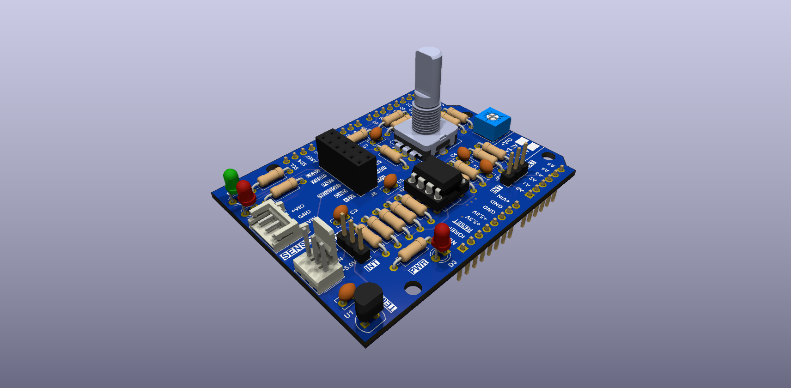

Arduino library and example sketches for the Analog Shield. The library uses the standard Arduino API and is developed for the Phyduino Pico; it also builds for the Arduino Uno.
| API reference | Classes, functions, pin constants and source files (Doxygen) | Open |
| A0 | TEMP_SIG_MCU: conditioned temperature signal (JP2 → MCU ADC) | |
| A1 | SENSOR_IN: raw temperature sensor (JP1 selects on-board U1 or external J1) | |
| A3 | TEMP_SIG_EXT: conditioned temperature signal (JP2 → external ADC) | |
| A4 | IR_VOUT: Sharp GP2Y0A21YK0F IR distance sensor (J2) | |
| A5 | POT: potentiometer RV1 | |
| 2 | ENC_SW: rotary encoder switch, active low | |
| 3 | ENC_A: rotary encoder A, active low | |
| 4 | ENC_B: rotary encoder B, active low | |
| 5 | LED2: red LED D2, active low | |
| 6 | LED1: green LED D1, active low |
| Analog Shield | Schematic, PCB drawings, interactive BoM and datasheets | Site |
| Phyduino Pico | Board package, pin map and analog input ranges | GitHub |